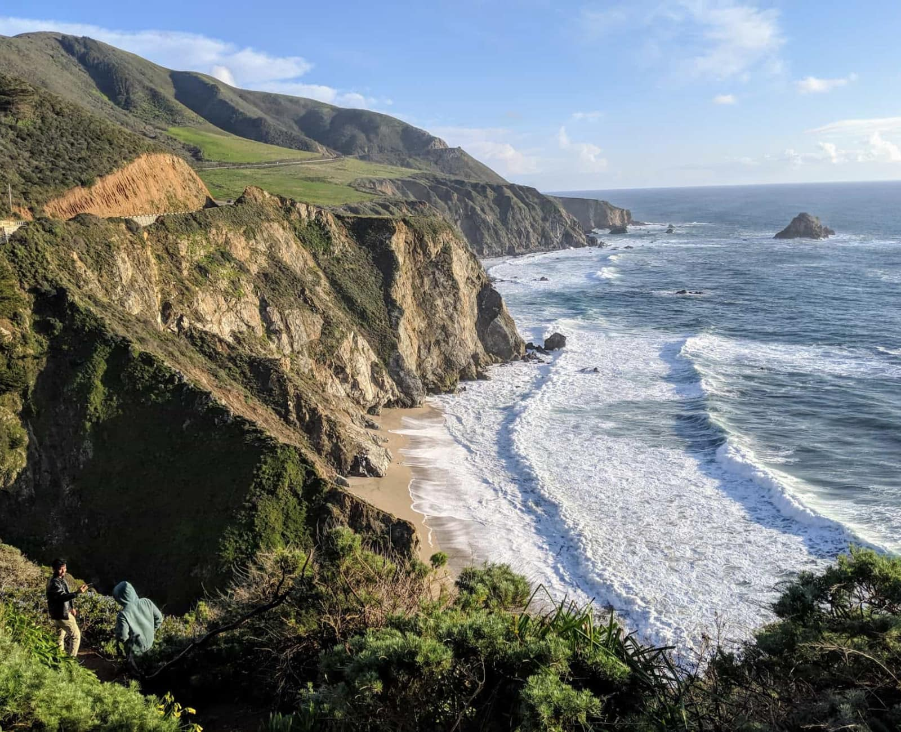
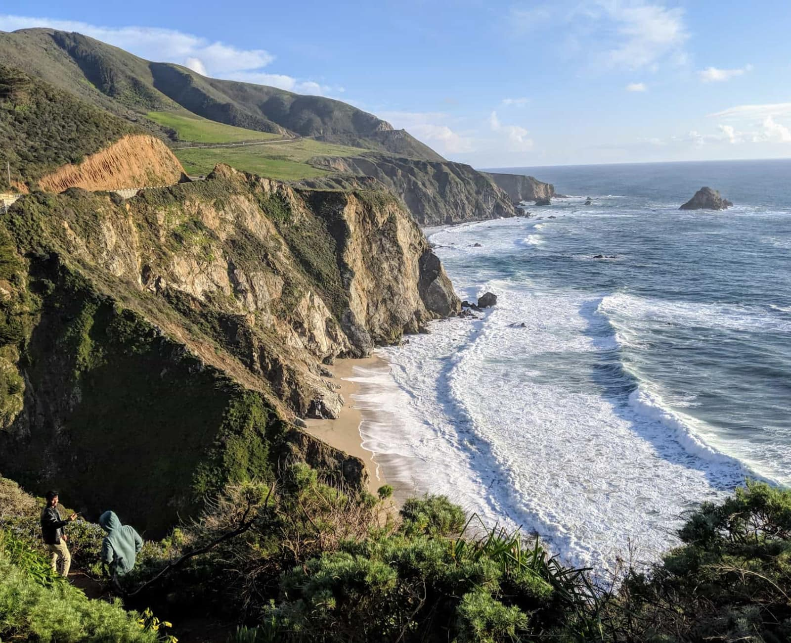

I'm Johann and
My Greatest Strengths
From the very beginning, I wanted my life to be about helping others. The experience of being born in the Philippines and seeing the everyday struggles of people there and the lack of solutions shaped me. These experiences helped develop my greatest ability, empathy. Being able to see understand people on a deeper level.
At 5 years old, I moved to Guam where my interest in design and solving problems began to emerge, albeit in an innocent way. Whether it was drawing, playing games that challenged my ability to solve puzzles and problems like the Rubix Cube, card games, or old computer games that did just that. My curiosity getting the best of me and asking my parents who were a Chemist and Radiologist what, why, and how they do their job. The spirit of inquiry was there.
Lost
After settling down in San Francisco, I attended college with the goal of becoming a Physical Therapist. I worked with scientists, professors, and professionals in the field to create plans depending on the individual’s condition. I provided feedback on different physical therapy design modalities. As well as present qualitative and quantitative results on different research projects. After some time, I realized that I did not have the time or resources to pursue this path. It was at this point, I felt lost.
Blessing in Disguise
I began working in startup companies and I was exposed to a different way of helping others. By creating meaningful products that assist people in their lives. It was working in these settings that I was reminded that regardless of the field, I wanted my career to have an impact on others.
After some research I enrolled in Bloc’s Designer Apprenticeship program. Product Design is the perfect marriage for my curiosity of solving complex problems and my awareness of others. Through the curriculum and my mentors’ guidance, I refocused my skills towards the field of design. I understand that my goal as a Designer is to create thoughtful and inclusive designs rooted in empathy for people and their everyday struggles.
Enough About Me
How can I help you? Connect with my anytime here. Or if you’re local, let’s get a coffee and talk all things UX.
Resume
Photography
I am incredibly inspired by traveling. The culture, food, architecture and more importantly the people all contribute to my creativity and love for learning about others.


 
